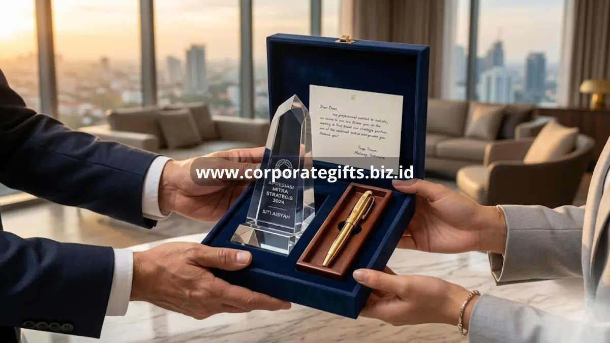

Poin Penting:
- Souvenir eksklusif perusahaan mencakup kategori seperti tumbler premium, plakat kristal, hampers, dan aksesori kerja bermerek.
- Pemilihan bahan dan kemasan sama pentingnya dengan desain logo dalam membentuk kesan eksklusif.
- Riset industri hadiah korporat menunjukkan sekitar 79% profesional merasa lebih dihargai perusahaan yang mengirimkan hadiah personal dibanding transaksional, berdasarkan survei Corporate Gift Study 2023.
- Anggaran souvenir eksklusif perusahaan umumnya disesuaikan dengan tingkat relasi penerima, mulai dari klien reguler hingga mitra strategis.
- CorporateGifts menyediakan koleksi souvenir eksklusif perusahaan siap kustomisasi untuk berbagai kebutuhan acara.
Souvenir eksklusif perusahaan adalah hadiah korporat bermutu tinggi, biasanya berbahan premium dan dipersonalisasi dengan logo, yang diberikan kepada klien, mitra, atau tamu penting untuk memperkuat hubungan bisnis.
Berbeda dari merchandise promosi biasa, souvenir eksklusif dirancang untuk mencerminkan citra profesional dan keseriusan perusahaan. Jika Anda sedang mencari referensi souvenir eksklusif perusahaan yang tepat untuk acara korporat mendatang, artikel ini merangkum lima belas pilihan yang paling banyak dipesan tahun ini.
Apa Itu Souvenir Eksklusif Perusahaan?
Souvenir eksklusif perusahaan adalah kategori hadiah korporat yang diposisikan di atas merchandise standar, baik dari sisi kualitas bahan, proses produksi, maupun makna simbolisnya.
Kategori ini umumnya digunakan pada momen penting seperti penandatanganan kontrak, kunjungan direksi, atau perayaan ulang tahun perusahaan. Penelitian dari Advertising Specialty Institute mencatat penerima cenderung menyimpan barang promosi berkualitas tinggi rata-rata lebih dari enam bulan, jauh lebih lama dibanding barang promosi murah yang sering langsung dibuang.
Ciri utama souvenir eksklusif perusahaan meliputi penggunaan material premium seperti kayu solid, kulit asli, logam kuningan, atau kristal; personalisasi logo yang presisi lewat teknik ukir atau engraving, bukan sekadar sablon; serta kemasan yang turut dirancang agar terasa mewah saat dibuka. Ketiga elemen ini yang membedakan souvenir eksklusif dari sekadar merchandise pameran.
Souvenir Eksklusif Perusahaan Apa Saja yang Paling Diminati?
Souvenir eksklusif perusahaan yang paling diminati klien korporat saat ini adalah tumbler premium berbahan stainless steel, plakat kristal penghargaan, set alat tulis kulit, dan hampers berisi produk lokal kurasi. Kombinasi fungsi harian dan tampilan elegan membuat kategori-kategori ini konsisten dipesan sepanjang tahun.
Tumbler dan Botol Minum Premium
Tumbler eksklusif dengan finishing matte dan ukiran logo laser masih menjadi favorit karena dipakai setiap hari, sehingga branding perusahaan terus terlihat dalam aktivitas penerima. Pilihan warna gelap seperti hitam doff atau navy sering dipilih untuk kesan profesional.
Plakat dan Trofi Kristal
Plakat kristal cocok untuk momen formal seperti penghargaan karyawan terbaik, penutupan kerja sama, atau apresiasi mitra jangka panjang. Bentuknya yang solid memberi kesan penghargaan yang lebih bermakna dibanding sertifikat kertas biasa.

Set Alat Tulis Kulit
Buku catatan sampul kulit dipadukan pulpen logam menjadi pilihan populer untuk tamu direksi atau delegasi bisnis, karena mencerminkan profesionalisme sekaligus tetap fungsional di ruang rapat.
Hampers Kurasi Produk Lokal
Hampers berisi kombinasi kopi premium, camilan sehat, atau produk kerajinan lokal memberi kesan personal dan mendukung narasi keberlanjutan yang kini banyak diusung perusahaan.
Mengapa Souvenir Eksklusif Perusahaan Penting bagi Bisnis?
Souvenir eksklusif perusahaan penting karena berfungsi sebagai media branding yang bertahan lama dan memperkuat hubungan emosional dengan klien maupun mitra. Berbeda dari iklan digital yang mudah terlewat, benda fisik berkualitas tinggi terus mengingatkan penerima pada perusahaan setiap kali digunakan.
Selain aspek branding, souvenir eksklusif juga berperan dalam membangun loyalitas jangka panjang. Data dari Promotional Products Association International menunjukkan lebih dari 80% konsumen dapat mengingat nama perusahaan pemberi merchandise dalam kurun waktu satu tahun setelah menerimanya. Angka ini menegaskan bahwa investasi pada souvenir berkualitas memberikan efek recall yang jauh lebih tinggi dibanding metode promosi konvensional.
Faktor yang Menentukan Kesan Eksklusif pada Souvenir Perusahaan
Kualitas Bahan Baku
Material seperti kayu solid, logam kuningan, kulit asli, dan kristal secara alami memberi kesan premium dibanding plastik atau bahan sintetis murah.
Presisi Personalisasi Logo
Teknik engraving, laser cutting, atau bordir timbul menghasilkan tampilan logo yang lebih rapi dan tahan lama dibanding cetak sablon biasa.
Desain Kemasan
Kemasan box premium dengan detail seperti pita satin atau kertas tisu berlapis turut membentuk pengalaman unboxing yang mendukung kesan eksklusif barang di dalamnya.
Relevansi dengan Penerima
Souvenir yang mempertimbangkan fungsi harian penerima, misalnya alat kerja atau aksesori yang sering dipakai, cenderung lebih dihargai dibanding barang dekoratif semata.
Kesalahan Umum saat Memilih Souvenir Eksklusif Perusahaan
Banyak perusahaan masih terjebak memilih souvenir berdasarkan harga termurah tanpa mempertimbangkan daya tahan barang, sehingga kesan eksklusif justru tidak tersampaikan. Kesalahan lain adalah logo yang terlalu dominan hingga mengalahkan desain produk itu sendiri, membuat souvenir terlihat seperti barang promosi massal dibanding hadiah personal.
Kesalahan berikutnya adalah mengabaikan waktu produksi, terutama untuk pesanan custom dalam jumlah besar menjelang acara penting, yang berisiko membuat souvenir tidak siap tepat waktu. Perencanaan pemesanan jauh hari sebelum acara sangat disarankan agar proses personalisasi dan quality control berjalan optimal.
Tips Memastikan Souvenir Eksklusif Perusahaan Berkesan Maksimal
Pastikan souvenir yang dipilih relevan dengan profil penerima, misalnya barang kerja untuk klien korporat atau produk lifestyle untuk mitra yang lebih santai. Perhatikan juga konsistensi warna dan gaya desain dengan identitas visual perusahaan agar souvenir terasa seperti perpanjangan brand, bukan barang generik.
Sertakan kartu ucapan personal pada setiap paket souvenir untuk menambah sentuhan emosional, karena detail kecil semacam ini sering menjadi pembeda antara hadiah biasa dan hadiah yang benar-benar diingat penerima.
Souvenir Eksklusif Perusahaan vs Merchandise Promosi Biasa
Souvenir eksklusif perusahaan berbeda dari merchandise promosi biasa dalam hal kualitas bahan, jumlah produksi, dan tujuan pemberian.
Merchandise promosi umumnya diproduksi massal dengan biaya rendah untuk dibagikan pada acara terbuka seperti pameran, sedangkan souvenir eksklusif diproduksi lebih terbatas dan ditujukan untuk penerima spesifik seperti klien VIP atau mitra strategis.
Perbedaan ini juga terlihat pada ekspektasi penerima. Merchandise promosi biasa diterima sebagai bagian dari interaksi umum, sementara souvenir eksklusif diterima sebagai bentuk apresiasi personal yang lebih bermakna, sehingga wajar jika investasi per unitnya juga lebih tinggi.
Bagaimana Menentukan Anggaran Souvenir Eksklusif Perusahaan?
Anggaran souvenir eksklusif perusahaan idealnya ditentukan berdasarkan tingkat kedekatan relasi dengan penerima, bukan sekadar jumlah unit yang dibutuhkan.
Klien strategis atau mitra jangka panjang biasanya layak mendapat alokasi anggaran lebih tinggi dibanding penerima dalam skala acara massal, mengingat dampak hubungan bisnis yang dipertaruhkan jauh lebih besar.
Sebagai patokan umum, perusahaan dapat membagi kategori penerima menjadi tiga tingkat: klien VIP atau direksi mitra yang mendapat souvenir kategori premium seperti plakat kristal atau set kulit eksklusif, klien reguler yang mendapat souvenir fungsional seperti tumbler atau alat tulis, serta peserta acara skala besar yang mendapat souvenir dengan biaya per unit lebih terjangkau namun tetap mempertahankan standar kualitas dasar.
Pembagian tingkatan ini membantu perusahaan mengalokasikan anggaran secara proporsional tanpa mengorbankan kesan eksklusif pada penerima prioritas.
Peran Kemasan dalam Membentuk Kesan Eksklusif
Kemasan sering dianggap sebagai elemen pelengkap, padahal perannya cukup besar dalam membentuk persepsi pertama penerima terhadap souvenir eksklusif perusahaan.
Kemasan box premium dengan material tebal, warna netral, dan detail seperti pita satin atau segel logo timbul mampu menaikkan persepsi nilai barang di dalamnya, bahkan sebelum souvenir tersebut dibuka.
Pengalaman unboxing yang dirancang dengan baik juga berpotensi menjadi momen yang dibagikan penerima di media sosial profesional seperti LinkedIn, terutama pada momen formal seperti penandatanganan kontrak atau kunjungan delegasi. Hal ini secara tidak langsung memperluas eksposur brand perusahaan melampaui penerima awal souvenir tersebut.
Souvenir eksklusif perusahaan adalah investasi branding yang memberikan dampak jangka panjang lewat kualitas bahan, personalisasi presisi, dan kemasan premium. Pilih kategori yang relevan dengan profil penerima dan pastikan proses pemesanan dilakukan cukup awal agar kualitas produksi tetap terjaga.
CorporateGifts menyediakan koleksi souvenir eksklusif perusahaan siap kustomisasi, mulai dari tumbler premium hingga plakat kristal, yang dapat disesuaikan dengan identitas brand Anda. Hubungi tim CorporateGifts sekarang untuk konsultasi gratis dan dapatkan penawaran terbaik untuk kebutuhan souvenir korporat perusahaan Anda.
FAQ
1. Apa saja contoh souvenir eksklusif perusahaan yang paling diminati?
Contoh yang paling diminati saat ini meliputi tumbler premium, plakat kristal penghargaan, set alat tulis dari kulit, serta hampers kurasi berisi produk-produk lokal berkualitas.
2. Bagaimana cara membedakan souvenir eksklusif dengan merchandise biasa?
Souvenir eksklusif menggunakan material premium, personalisasi presisi seperti engraving atau laser, dan kemasan mewah. Sebaliknya, merchandise biasa diproduksi secara massal dengan bahan standar dan umumnya hanya disablon.
3. Mengapa kemasan sangat penting untuk souvenir eksklusif?
Kemasan adalah hal pertama yang dilihat penerima. Kemasan yang mewah seperti box tebal dengan pita atau segel logo dapat menaikkan persepsi nilai hadiah dan menciptakan pengalaman unboxing yang tak terlupakan.
4. Siapa saja yang biasanya menerima souvenir kategori ini?
Penerimanya adalah pihak-pihak strategis, seperti klien VIP, mitra bisnis jangka panjang, tamu direksi, atau karyawan yang mencapai prestasi luar biasa.
5. Berapa anggaran yang tepat untuk souvenir eksklusif?
Anggaran sebaiknya disesuaikan dengan tingkat kedekatan relasi. Klien VIP atau strategis layak dialokasikan budget lebih tinggi dibandingkan penerima acara massal, demi menjaga kesan eksklusif pada prioritas utama.
Butuh rekomendasi cepat untuk corporate gift?
Chat tim Pusat Souvenir & Merchandise Kantor untuk kurasi pilihan sesuai budget & kebutuhan brand Anda.